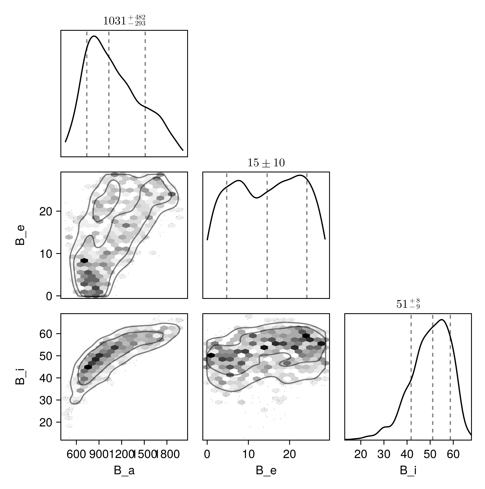

Fit with a Thiele-Innes Basis
This example shows how to fit relative astrometry using a Thiele-Innes orbital basis instead of the traditional Campbell basis used in other tutorials. The Thiele-Innes basis is more suitable then Campbell for fitting low-eccentricity orbits, because it does not have the issues where ω, Ω, and tp become degenerate as eccentricity and/or inclination fall to zero.
At the end, we will convert our results back into the Campbell basis to compare.
using Octofitter
using CairoMakie
using PairPlots
using Plots:Plots
using Distributions
astrom_like = PlanetRelAstromLikelihood(
(epoch = 50000, ra = -505.7637580573554, dec = -66.92982418533026, σ_ra = 10, σ_dec = 10, cor=0),
(epoch = 50120, ra = -502.570356287689, dec = -37.47217527025044, σ_ra = 10, σ_dec = 10, cor=0),
(epoch = 50240, ra = -498.2089148883798, dec = -7.927548139010479, σ_ra = 10, σ_dec = 10, cor=0),
(epoch = 50360, ra = -492.67768482682357, dec = 21.63557115669823, σ_ra = 10, σ_dec = 10, cor=0),
(epoch = 50480, ra = -485.9770335870402, dec = 51.147204404903704, σ_ra = 10, σ_dec = 10, cor=0),
(epoch = 50600, ra = -478.1095526888573, dec = 80.53589069730698, σ_ra = 10, σ_dec = 10, cor=0),
(epoch = 50720, ra = -469.0801731788123, dec = 109.72870493064629, σ_ra = 10, σ_dec = 10, cor=0),
(epoch = 50840, ra = -458.89628893460525, dec = 138.65128697876773, σ_ra = 10, σ_dec = 10, cor=0),
)
@planet b ThieleInnesOrbit begin
e ~ Uniform(0.0, 0.5)
A ~ Normal(0, 10000) # milliarcseconds
B ~ Normal(0, 10000) # milliarcseconds
F ~ Normal(0, 10000) # milliarcseconds
G ~ Normal(0, 10000) # milliarcseconds
# We would like to keep using the "tau" parameterization,
# so calculate the Period from the Thiele-Innes coefficients
# above. This is optional and you can just do
# tp ~ Uniform(...) instead with lower efficiency.
τ ~ UniformCircular(1.0)
P = begin
u = (b.A^2 + b.B^2 + b.F^2 + b.G^2)/2
v = b.A*b.G - b.B * b.F
α = sqrt(u + sqrt((u+v)*(u-v)))
a = α/system.plx
√(a^3/system.M)
end
tp = b.τ*b.P*365.25 + 50000
end astrom_like
@system TutoriaPrime begin
M ~ truncated(Normal(1.2, 0.1), lower=0)
plx ~ truncated(Normal(50.0, 0.02), lower=0)
end b
model = Octofitter.LogDensityModel(TutoriaPrime)LogDensityModel for System TutoriaPrime of dimension 9 with fields .ℓπcallback and .∇ℓπcallback
We now sample from the model as usual:
using Random
Random.seed!(1)
results = octofit(model)Chains MCMC chain (1000×25×1 Array{Float64, 3}):
Iterations = 1:1:1000
Number of chains = 1
Samples per chain = 1000
Wall duration = 16.12 seconds
Compute duration = 16.12 seconds
parameters = M, plx, b_e, b_A, b_B, b_F, b_G, b_τy, b_τx, b_τ, b_P, b_tp
internals = n_steps, is_accept, acceptance_rate, hamiltonian_energy, hamiltonian_energy_error, max_hamiltonian_energy_error, tree_depth, numerical_error, step_size, nom_step_size, is_adapt, loglike, logpost, tree_depth, numerical_error
Summary Statistics
parameters mean std mcse ess_bulk ess_tail rh ⋯
Symbol Float64 Float64 Float64 Float64 Float64 Float ⋯
M 1.2169 0.0890 0.0039 479.0433 534.5035 1.00 ⋯
plx 50.0002 0.0205 0.0007 991.7560 457.0424 0.99 ⋯
b_e 0.2529 0.1461 0.0161 85.1998 227.8871 1.00 ⋯
b_A 79.8045 613.3084 68.4119 78.8316 152.6501 1.03 ⋯
b_B -341.5654 418.4717 60.5959 57.4205 122.5754 0.99 ⋯
b_F 440.2678 577.1581 78.1032 60.4501 139.8577 1.00 ⋯
b_G 138.3215 370.5060 41.8725 69.4716 161.2312 1.02 ⋯
b_τy 0.5623 0.6291 0.1001 58.7487 82.6719 1.00 ⋯
b_τx 0.1096 0.5256 0.0522 105.1946 210.9764 1.04 ⋯
b_τ 0.0314 0.1856 0.0151 131.3286 141.0137 1.01 ⋯
b_P 78.7740 38.1277 4.2715 72.0264 192.9827 1.00 ⋯
b_tp 50673.7723 3247.0737 286.5871 128.5076 182.4053 1.01 ⋯
2 columns omitted
Quantiles
parameters 2.5% 25.0% 50.0% 75.0% 97.5%
Symbol Float64 Float64 Float64 Float64 Float64
M 1.0527 1.1552 1.2170 1.2755 1.3961
plx 49.9596 49.9868 49.9999 50.0136 50.0419
b_e 0.0094 0.1292 0.2541 0.3820 0.4925
b_A -868.4589 -479.9619 63.8897 632.5893 1169.5194
b_B -933.6530 -664.6745 -451.2555 -49.9501 470.7773
b_F -613.0882 3.6421 499.5383 859.3015 1473.8037
b_G -507.3224 -176.8110 153.0368 490.1502 683.1105
b_τy -0.9839 0.4690 0.8914 0.9709 1.0188
b_τx -0.9166 -0.2660 0.0956 0.5609 0.9845
b_τ -0.4187 -0.0470 0.0164 0.1202 0.4570
b_P 27.7355 48.2898 69.6026 102.8108 165.4180
b_tp 43475.3703 48489.2929 50481.1220 53190.5552 56896.2386
Notice that the fit was very very fast! The Thiele-Innes orbital paramterization is easier to explore than the default Campbell in many cases.
We now display the results:
octoplot(model,results)
octocorner(model, results, small=false)
Conversion back to Campbell Elements
To convert our chain into the more familiar Campbell parameterization, we have to do a few steps. We start by turning the chain table into a an array of orbit objects, and then convert their type:
orbits_ti = Octofitter.construct_elements(results, :b, :) # colon means all rows1000-element Vector{ThieleInnesOrbit{Float64}}:
ThieleInnesOrbit{Float64}(0.28980428047349943, 53647.521964968604, 1.2308910471214916, 50.008133914672925, 979.1344806017291, -233.5248041798903, 710.6784602440214, 612.6122123329236, -14.00240413111542, 15.786141381896591, 39971.646163583675, 0.05741280744881384, 1.3476368619652546)
ThieleInnesOrbit{Float64}(0.10395718378940048, 52074.13050431149, 1.3049361670644486, 50.001008142486434, 494.1349438516237, -373.0616434677787, 600.0054024624349, 400.84760658240634, -9.609536883620343, 6.116292402162104, 19840.687034587812, 0.11566557249763221, 1.1099712596163185)
ThieleInnesOrbit{Float64}(0.3955910010408713, 50174.25828826766, 1.0215092808109347, 49.97508231673269, -41.095901018589, -827.5185236077049, 1201.205248065405, 231.4866976827576, -18.730942451436658, -5.150076209721266, 45210.66208696391, 0.050759805733162605, 1.5195451868659071)
ThieleInnesOrbit{Float64}(0.43041763773861763, 50495.03554465347, 1.013726900238544, 50.03136080581431, 90.71656476125199, -844.612947610846, 1492.2266136946387, 372.2291019515161, -25.775040506579284, -2.774707407922784, 62203.390897833924, 0.03689323671069934, 1.5847222735559425)
ThieleInnesOrbit{Float64}(0.35808325819422276, 51129.993344249546, 1.08283921326316, 49.982092059686074, 331.33290006269857, -699.3328887885501, 1233.1707239631182, 337.12385347924027, -20.633568471426866, 3.3528296493971594, 45987.30836241239, 0.049902560213279754, 1.4545338961612553)
ThieleInnesOrbit{Float64}(0.2850834690779656, 51192.95178698561, 1.1878034541519569, 49.98719828897293, 305.762428094475, -604.0263776186698, 1225.8611373236643, 427.76529782673333, -22.261747374055023, 2.093284073756755, 44577.740492292614, 0.051480501238027714, 1.3407197248852898)
ThieleInnesOrbit{Float64}(0.20933535829447097, 51604.02254361613, 1.1827357679207762, 50.015827833053514, 386.1900805701416, -516.910804667451, 1093.581541162872, 394.89780771158587, -19.832233372021772, 4.39819991920576, 38648.39380500807, 0.059378520002157924, 1.2367366087863867)
ThieleInnesOrbit{Float64}(0.3175757832244589, 52055.6333759966, 1.201860827140187, 50.01591743575933, 612.4537288206565, -561.2191782462259, 1234.624382832569, 470.2412707468522, -22.34736526900147, 8.805129767075034, 48948.29633687591, 0.046883846759607516, 1.3895065137355642)
ThieleInnesOrbit{Float64}(0.3314027045833632, 50472.02173003877, 1.1770457481061198, 50.00576931678505, 73.89692594910768, -731.4565974812217, 1049.8673550818519, 147.17447068014565, -15.294484014799613, -0.7862397778482567, 32895.937934196314, 0.06976193927628818, 1.4111474966972477)
ThieleInnesOrbit{Float64}(0.2984250252160071, 50362.26943439505, 1.0940247345327687, 49.99346133284484, 21.503049000867954, -692.2642229958974, 1024.2481218922353, 145.58332412179465, -15.505690499704503, -2.0322415709380808, 33109.041166326104, 0.06931292310983576, 1.3604149440480677)
⋮
ThieleInnesOrbit{Float64}(0.4538299442712753, 48660.17501922811, 1.1681537786737457, 49.999012529275255, -703.7990269039345, -979.7549664629393, 1188.5472883670036, -44.81955118443541, -17.579271545029073, -18.035276427472336, 55118.304578765164, 0.04163561347070304, 1.6315217279296386)
ThieleInnesOrbit{Float64}(0.4511658911287866, 48541.41939010145, 1.1677205622570783, 50.001690113182036, -732.2581944337724, -985.635279405715, 1184.3754048559633, -61.2028132502003, -17.411308831225735, -18.537156534508906, 55824.386127355945, 0.04110899525820979, 1.6260653069282132)
ThieleInnesOrbit{Float64}(0.14548561421514097, 49193.781392227225, 1.3149723301179115, 49.99407215952539, -284.1361579658137, -631.7733241692821, 1032.6506870738838, 102.78539274261948, -17.494219138768642, -8.195517617359599, 33579.31596174975, 0.06834220289704693, 1.1578042261111283)
ThieleInnesOrbit{Float64}(0.288645243291094, 48715.20878442682, 1.3138755338907593, 49.998039373444406, -499.5360703737597, -787.5511064722427, 1184.9822136016678, 92.1336993788753, -19.893050970713446, -13.36252489250649, 45377.33886332552, 0.0505733584667456, 1.345933390878108)
ThieleInnesOrbit{Float64}(0.3712429511255162, 47409.89119719275, 1.2900398706842466, 49.98396940993137, -901.6374020785, -711.5221641959218, 526.0055787552911, -372.97297970930174, -4.2890529384337, -19.4935127176444, 36343.29805858776, 0.06314463868695805, 1.4767798929769287)
ThieleInnesOrbit{Float64}(0.3756050086375934, 48297.87615175074, 1.3265115411533686, 50.00251863540571, -756.6798790002382, -796.1390650269338, 876.954177856011, -210.2918059799598, -11.611576846455332, -17.089912410144635, 39275.27119868047, 0.058430772202511215, 1.4842845568462808)
ThieleInnesOrbit{Float64}(0.3032490305793671, 47896.21985634573, 1.169252147452438, 50.00278310080153, -741.2434643650461, -558.8094212023157, 505.11095878698876, -395.1380960583288, -4.353764596080308, -14.11065798579624, 28125.193283615456, 0.08159532990441172, 1.3676498256703893)
ThieleInnesOrbit{Float64}(0.26554253925226395, 48228.903783044, 1.2019331363007708, 50.01206422394377, -618.1939424389409, -703.8667560198334, 923.7519632768765, -116.10535275251603, -13.910204300362349, -14.064469706654632, 37545.356601028034, 0.061122989161837164, 1.312668460360685)
ThieleInnesOrbit{Float64}(0.2434788372494445, 49210.87562979994, 1.0311514951347016, 50.00515435273057, -345.43934142872985, -655.9717083718076, 739.1943666686705, -111.58645246079455, -8.643738733574219, -8.42745095918318, 25571.462693853147, 0.08974396388962103, 1.28206090927476)Here is one of those entries:
display(orbits_ti[1])We can now make a table of results (and visualize them in a corner plot) by querying properties of these objects:
table = (;
B_a = rad2deg.(semimajoraxis.(orbits_ti)),
B_e = rad2deg.(eccentricity.(orbits_ti)),
B_i = rad2deg.(inclination.(orbits_ti)),
)
pairplot(table)
We can also convert the orbit objects into Campbell parameters:
orbits_campbell = Visual{KepOrbit}.(orbits_ti)
orbits_campbell[1]KepOrbit{Float64}
─────────────────────────
a [au ] = 24.5
e = 0.28980428
i [° ] = 59.4
ω [° ] = 318.0
Ω [° ] = 10.9
tp [day] = 53600.0
M [M⊙ ] = 1.23
period [yrs ] : 109.4
mean motion [°/yr] : 3.29
──────────────────────────
plx [mas] = 50.0
distance [pc ] : 20.0
──────────────────────────